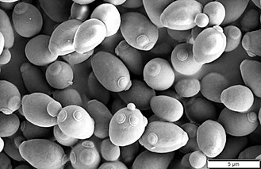

Many proteins important in human biology were first discovered by studying their homologs in yeast; these proteins include cell cycle proteins, signaling proteins, and protein-processing enzymes. S. cerevisiae is currently the only yeast cell known to have Berkeley bodies present, which are involved in particular secretory pathways. Antibodies against S. cerevisiae are found in 60–70% of patients with Crohn's disease and 10–15% of patients with ulcerative colitis (and 8% of healthy controls).[2] S. cerevisiae has been found to contribute to the smell of bread; the proline and ornithine present in yeast are precursors of the 2-Acetyl-1-pyrroline, a roast‐smelling odorant, in the bread crust.[3]
Refinements in microbiology following the work of Louis Pasteur led to more advanced methods of culturing pure strains. In 1879, Great Britain introduced specialized growing vats for the production of S. cerevisiae, and in the United States around the turn of the century centrifuges were used for concentrating the yeast,[11] making modern commercial yeast possible, and turning yeast production into a major industrial endeavour. The slurry yeast made by small bakers and grocery shops became cream yeast, a suspension of live yeast cells in growth medium, and then compressed yeast, the fresh cake yeast that became the standard leaven for bread bakers in much of the Westernized world during the early 20th century.